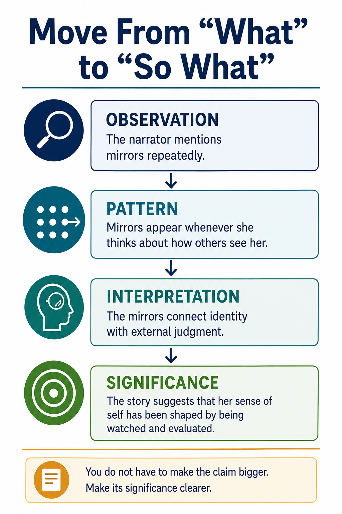

Before You Practice: Make the Significance Clearer, Not Bigger
“So what?” does not mean you have to make a sweeping statement about all people, all society, or all of human nature. It means explaining why your interpretation matters inside the text.

Read the full text version of this infographic
Move From “What” to “So What”
Move through four stages to explain not only what you notice in a literary text, but why it matters.
ObservationThe narrator mentions mirrors repeatedly.
PatternMirrors appear whenever she thinks about how others see her.
InterpretationThe mirrors connect identity with external judgment.
SignificanceThe story suggests that her sense of self has been shaped by being watched and evaluated.
Takeaway: You do not have to make the claim bigger. Make its significance clearer.
OBSERVATIONWhat specific detail do you notice?
PATTERNWhat relationship develops across details?
INTERPRETATIONWhat might the pattern suggest?
SIGNIFICANCEWhy does that interpretation matter here?
Significance is not the same as a universal life lesson.
A precise explanation of what the pattern changes, reveals, complicates, costs, or makes possible in this text is often a stronger “So What?” than a giant statement about humanity.
Now Practice
Start with an observation, pattern, and interpretation, then choose the significance statement that makes the idea clearer without overreaching.
“So What?” Practice
Round 1 of 3
Example 1 of 8
Round 1: Follow the Thinking
OBSERVATION
PATTERN
INTERPRETATION
Which statement best explains why this interpretation matters?